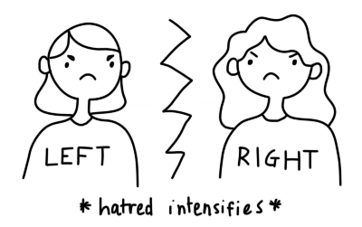

a mobile platform for constructive, rapid-fire debate

these days, most debates take place in the comment section of facebook.
these usually devolve into chaos, with neither side's mind changed or perspective broadened.
this furthers the already large political division in today's america.
we wanted to change this...
introducing debatemate, an app that fosters constructive, stimulating debate.
debate others 1-on-1 on pressing modern issues, win matches using strong arguments, and have your beliefs challenged
!
it's great practice for debate teams and articulating your opinion in general
!